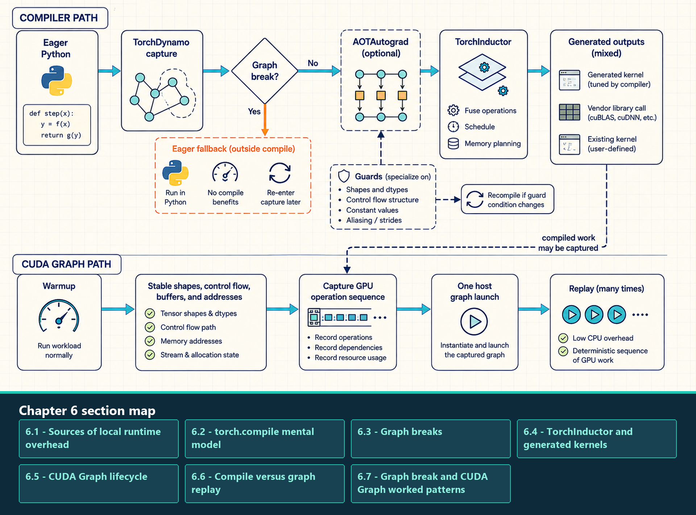
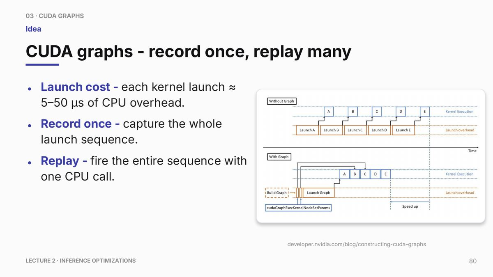

6 Compilation and Runtime
Chapter 5 separated long device kernels from gaps created by Python dispatch, synchronization, and repeated launches. When those host-side gaps occupy a meaningful fraction of a stable step, changing the kernel arithmetic alone cannot recover the lost time.
Compilation and graph replay address different parts of that delay. PyTorch compilation captures compatible tensor operations and may transform or fuse them; a CUDA Graph records a selected sequence of GPU operations and relaunches it with less host work. Neither mechanism makes an inefficient algorithm, memory access pattern, or collective communication path disappear.
Eager execution is the baseline. During compilation, TorchDynamo records compatible tensor operations and the conditions under which that recording can be reused. If training needs gradients, AOTAutograd prepares forward and backward graphs; TorchInductor then turns captured regions into generated kernels or library calls. Operations that cannot be captured continue through eager PyTorch. CUDA Graph warmup, fixed-address capture, and replay form a separate path whose benefit must be measured against compilation, replay, both, or neither.
The compiler captures compatible tensor work, checks guards, handles graph breaks, and lowers captured regions into generated kernels or library calls. CUDA Graphs record and replay a stable sequence of already selected GPU operations.

The compiler path shows TorchDynamo, optional AOTAutograd handling, TorchInductor, and mixed compiled or eager output. The CUDA Graph path requires warmup, stable shapes, control flow, buffers, and memory addresses before capture. Compiled work may later be captured, but a compiler graph and a CUDA Graph are not the same object.
6.1 Sources of local runtime overhead
Single-worker runtime overhead is the cost paid inside one model-worker process while it executes a repeated model step. It includes Python dispatch through the PyTorch operator stack, compiler fallback to eager execution, kernel launch overhead, allocator churn, host-device synchronization, and small unfused GPU kernels.
A decode loop with many tiny kernels can remain slow even under a strong batching policy. The scheduler can admit more requests, but every admitted request still pays the single-worker cost of launching and running the model step. Later compiler and runtime techniques are useful when profiling shows that this cost, rather than request admission or KV-cache capacity, is the limiting factor.
- Python dispatch overhead: Time spent entering Python and the PyTorch dispatcher for many small operations. It is most visible when GPU kernels are short and repeated.
- Eager fallback regions: When compiler capture cannot cover a hot operation, that region runs through ordinary eager dispatch. Repeated fallback reduces fusion and can reintroduce Python overhead between compiled regions.
- Launch overhead: Fixed CPU-side cost of launching GPU work. It matters when each kernel does little work, such as small-batch decode or many elementwise operations.
- Allocator and copy overhead: Repeated temporary allocations or host-device transfers can dominate before the kernel math becomes the bottleneck.
Engine knobs cannot fully compensate for a local worker that launches too many tiny kernels, synchronizes with the host on every step, or recompiles constantly. Once the local model step is stable, batching, paging, and scheduling policies can be evaluated without confusing scheduler effects with per-worker runtime overhead.
6.2 torch.compile mental model
torch.compile is the PyTorch entry point for turning suitable eager PyTorch code into captured graph regions that can be optimized and lowered. The optimized object is the traceable runtime region of tensor operations reached from the Python program.
A CUDA Graph is a recorded sequence of GPU operations that can be replayed with lower CPU launch overhead when its shapes, control flow, and memory addresses remain stable. This is different from a compiler graph: a compiler graph can transform computation, while a CUDA Graph replays the selected GPU work.
- Eager execution: Default PyTorch mode where operations run one after another through the dispatcher. It is flexible, but many small operations can create CPU dispatch overhead and extra intermediate tensors in HBM.
- Graph capture: The compiler records a region of tensor operations when Python control flow, operators, and shapes are traceable enough.
- Graph optimization: The compiler can fuse compatible operations, remove unnecessary intermediates, and choose generated kernels for a captured region.
- Lowering: The optimized graph is translated into executable code. In many PyTorch paths, TorchInductor emits Triton or other backend code for fused regions.
- Guard: A condition recorded for a compiled region, such as an input type, shape property, or Python value. When a guard no longer holds, PyTorch may compile another variant or run a different path.
- Graph break: A boundary where TorchDynamo cannot keep execution in one captured region. PyTorch can run eager code at the boundary and may resume capture later, so one break can split a function into several compiled and eager pieces.
The PyTorch compiler path begins at Python execution rather than at Triton. TorchDynamo captures compatible Python frames, graph breaks delimit what remains together, AOTAutograd stages forward and backward graphs when gradients are involved, and TorchInductor lowers captured graphs to optimized code. Chapter 4’s Triton pipeline is one possible generated-kernel path, not a diagram of this complete stack.
Definition - Compiler stack terms
TorchDynamo: Captures Python-level PyTorch execution into graph regions when control flow and operators are traceable.
AOTAutograd: Stages forward and backward graphs for differentiable computation when gradients are involved.
TorchInductor: Lowers captured graphs into executable optimized code, often emitting Triton kernels for fused regions.
Common torch.compile settings
mode='default': Balanced compile behavior. Use it first when you want compiler benefits without aggressively changing overhead or autotuning behavior.
mode='reduce-overhead': Targets Python and launch overhead, often by using CUDA Graphs where the graph is safe. It can increase memory use because reusable workspaces or graph state may be cached.
mode='max-autotune': Allows more autotuning and can use Triton or template-based matrix multiplication paths on supported devices. It may improve steady-state speed at the cost of compilation/autotuning time.
dynamic=True or dynamic=False: Controls dynamic-shape tracing policy. Dynamic kernels can reduce recompilation for varying shapes, but some operations still force specialization.
torch.compile and @triton.jit are different entry points. torch.compile starts from PyTorch model code and tries to capture graph regions before lowering them. @triton.jit starts from an explicitly written Triton kernel function and compiles that tile program. A torch.compile path may generate Triton kernels internally, but that does not make hand-written Triton code the same object as a compiled PyTorch graph.
6.3 Graph breaks
A graph break makes TorchDynamo end one captured region, run unsupported code eagerly, and possibly resume capture afterward. The performance cost depends on where and how often this happens: a break during one-time setup may not matter, while a break in every decode step can restore Python dispatch, block fusion across the boundary, or synchronize a tensor value with the host.
Definition - Graph break
A graph break splits a Python function around code that TorchDynamo cannot represent in the current graph. The unsupported boundary runs eagerly and capture may resume afterward. Repeated breaks reduce fusion opportunities and reintroduce dispatch between regions.
Breaks usually arise when tensor execution crosses into Python values, unsupported effects, or unstable specialization. The following cases separate those causes so diagnostics can target the actual boundary.
- Scalar extraction: Calls such as
.item()move a tensor value into Python and commonly force GPU-to-CPU synchronization or a graph break. Some releases and configurations can capture scalar outputs, so diagnostics must confirm the observed path. - Data-dependent Python branches: Python
ifor loop decisions based on tensor values cannot usually be traced as a single static graph. - Unsupported operations: An operator, mutation pattern, or side effect may not have a compiler lowering, so execution falls back to eager mode.
- Dynamic shape churn: Frequent shape changes can cause recompilation or guards that prevent a stable compiled path.
- Host I/O in hot paths: Printing, logging tensor values, or debugging inside a repeated GPU path can force synchronization and graph breaks.
After locating the breaks, inspect the captured regions to see which kernels TorchInductor generated, what it fused, and how much memory traffic remains.
6.4 TorchInductor and generated kernels
TorchInductor is the PyTorch compiler backend that lowers captured graph regions into executable code. In many CUDA paths it emits generated Triton kernels for fused regions and calls vendor libraries or existing kernels for operations that are better handled by those libraries.
- Captured graph: The traceable tensor program handed to the backend after TorchDynamo and, when needed, AOTAutograd have staged the computation.
- Fusion: Combining compatible operations so an intermediate may remain in registers or shared memory, be recomputed cheaply, or avoid a separate HBM write and read. Exact placement depends on compiler decisions and resource limits.
- Generated kernel: Kernel code emitted by the compiler for a specific graph region, dtype, layout, and shape family. Generated does not mean universally optimal; it means specialized to the compiler’s view of the program.
- Scheduler and lowering: Compiler decisions that choose loop structure, tiling, vectorization, memory access order, and which operations remain separate calls.
- Limits: Poor algorithmic structure, unsupported operators, dynamic control flow, request scheduling, cache paging, and cross-rank communication are outside what TorchInductor can fix by itself.
The main performance win is reducing unnecessary HBM traffic and launch count. For example, a chain of elementwise operations may become one generated kernel that reads input once, keeps temporary values in registers, and writes the final result once. That is a different kind of win from CUDA Graph replay, which keeps the same kernels but launches them with less CPU overhead.
When generated kernels are slow, first inspect the source graph and shape assumptions. A compiler backend can generate reasonable code for the graph it sees, but it cannot recover locality that the source program has already destroyed or turn highly dynamic request control flow into a static batch policy.
The number of generated Triton kernels is not fixed. It is a property of one compiled run: graph regions, shapes, dtypes, layouts, dynamic-shape guards, and autotuning choices determine how many kernels are emitted. Count them from compiler logs, profiler traces, or the TorchInductor/Triton cache for the specific workload, not from a static catalog.
Generated-kernel caveat
Generated Triton is often the right outcome for fused elementwise and reduction regions, but vendor libraries can still be better for standard GEMMs, convolutions, and collectives. The compiler backend chooses among generated kernels, templates, and library calls; performance work should inspect the chosen path before replacing it by hand.
Generated code is useful only when the selected kernel path reduces measured launch count or memory traffic for the actual shapes; generation alone does not make it faster than a vendor kernel. The next question is whether the remaining delay comes from kernel execution or from repeatedly launching an otherwise stable sequence.
6.5 CUDA Graph lifecycle
A CUDA Graph is a recorded sequence of GPU operations that can be replayed with much lower CPU launch overhead than issuing each kernel separately. It does not make kernels faster; it reduces repeated host-side launch and dispatch cost for a stable sequence of work.
The mechanism has three phases. Warmup runs first so kernels, autotuning, and allocator state are initialized. Capture records the steady sequence of operations and their memory addresses. Replay launches that captured sequence again after new inputs have been copied into the same static buffers.
The CUDA Graph visual is a runtime timeline. It compares the one-time warmup and capture region with the repeated replay region that removes most per-iteration CPU launch work.
The timeline separates the one-time setup work from the repeated replay path.

Warmup completes lazy initialization, autotuning, and allocations. Capture records supported operations and dependencies against stable virtual addresses and stream-capture rules. One replay is one graph-launch submission containing the recorded device operations, not one fused device kernel.
Chart note
Measured or compared: Lifecycle of a CUDA Graph path: warmup, capture, then repeated replay.
Axes, units, and series: The visual is a timeline schematic. The horizontal direction is execution order; boxes represent setup, captured GPU work, and replayed work rather than a measured duration scale.
Read for: Read for where overhead moves: warmup and capture happen outside the steady-state timing path, while replay reduces repeated CPU launch overhead without changing the kernels.
Source status: Exact source timeline screenshot used schematically; no timing values are extracted from the visual.
The main constraint is stability. Shapes, control flow, and memory addresses must remain compatible with the captured graph. If every request changes tensor shape or allocates new buffers, CUDA Graph replay either fails or loses most of its value.
- Dynamic-shape failure: If each replay-sized region sees new sequence lengths, batch sizes, or tensor layouts, the compiler may recompile and CUDA Graph capture may no longer match the new execution path.
- Address stability: A captured graph reuses the same pointer arguments. Copy new request data into the static buffers whose addresses were recorded during capture.
- Control-flow failure: Data-dependent Python branches or request-dependent operator sequences can make the captured graph represent only one path while production takes many paths.
- Allocation failure: Allocations during capture can bake allocator behavior into the graph or cause capture errors. Warmup and pre-allocation keep steady-state memory addresses predictable.
This is why serving systems often bucket shapes or pre-allocate decode buffers before using graph replay. Shape bucketing preserves enough regularity for compilation and replay, while the scheduler still handles variable request lengths at a coarser level.
6.6 Compile versus graph replay
Compilation and graph replay are different runtime changes. Compilation transforms captured computation and may generate new fused kernels. CUDA Graph replay records an already-selected sequence of GPU work and relaunches it with lower CPU overhead.
- Use compilation when: The hot path contains many traceable tensor operations that can be fused, simplified, or lowered into better kernels.
- Use CUDA Graph replay when: The hot path already has acceptable kernels but repeated launches and Python dispatch dominate wall time.
- Use both when: A compiled steady-state region can be captured with stable shapes and stable memory addresses.
- Use eager execution when: Shapes, control flow, memory addresses, or request membership change too frequently for stable capture, or profiling shows that capture overhead is outside the limiting path.
The comparison below separates compiler graphs, which can transform computation, from CUDA Graph replay, which relaunches an already selected sequence.
The structured comparison below turns that distinction into a selection rule: transformation changes the computation, replay changes how an existing operation sequence is submitted, and the combined path requires both capture compatibility and worthwhile compiler output.
| Mechanism | Changes computation? | Primary benefit | Main constraint |
|---|---|---|---|
| torch.compile | Yes, can fuse and generate kernels | May reduce Python overhead, launch count, and intermediate memory traffic | Graph breaks, unsupported ops, recompilation |
| CUDA Graphs | No, replays captured work | Reduces CPU launch overhead | Static shapes and stable memory addresses |
| Combined | Compile first, then replay stable work | Single-worker execution with low launch overhead | Harder debugging and stricter shape discipline |
The operational sequence is usually compile first, then capture only the stable steady-state path. Capturing before compilation can preserve too many small kernels; compiling without checking graph breaks can leave eager gaps that still dominate the loop.
6.7 Graph break and CUDA Graph worked patterns
A common local-runtime repair sequence has three stages. First, make the hot function traceable enough that torch.compile can capture it. Second, stabilize input shapes and memory addresses enough that CUDA Graph replay can remove repeated launch overhead. Third, measure the steady-state path separately from warmup, compilation, and allocation.
- Trace repair: Remove Python-side scalar extraction, host I/O, and data-dependent branches from the hot tensor path.
- Static buffers: Pre-allocated tensors whose memory addresses are reused across CUDA Graph replays.
- Warmup isolation: Run compilation, kernel autotuning, and allocator initialization before capture so the captured sequence represents steady-state work.
- Replay validation: Check that new inputs are copied into the captured buffers and that outputs are copied or cloned before the next replay overwrites them.
6.7.1 Resolving graph breaks in RMS-normalization
This toy normalization loop places four capture problems in one short example: scalar extraction that can synchronize a GPU value with the CPU, a Python branch on that extracted value, host logging in the repeated path, and tensor operations that must remain traceable. The same patterns can occur in many model operations, not only normalization.
The optimization principle is to keep decisions in tensor space when they belong on the GPU and to keep host-side diagnostics out of the repeated compiled region. The naive implementation contains typical compilation anti-patterns; the revised implementation shows the same computation expressed in a compiler-friendly form.
Example: Resolving graph breaks in RMS-normalization. The first function contains patterns that commonly create synchronization and graph breaks. The second keeps the decision in tensor operations so the current compiler has a better chance of capturing the hot region; graph-break diagnostics must confirm the result for the installed PyTorch release. Calling .item() extracts a tensor value as a Python scalar, forcing a GPU-to-CPU synchronization that stalls execution. Python if conditions on tensor values break compilation. torch.where expresses selection in tensor form. Clamping the denominator prevents a zero-scale input from creating invalid values or gradients in the unselected division branch. Printing tensor values in a hot loop can synchronize or break capture.
Code example: Resolving graph breaks in RMS-normalization
import torch
# 1. BROKEN: Forces CPU-GPU syncs and graph breaks
def broken_decode_step(h: torch.Tensor, state: torch.Tensor):
# Normalization
h = h * torch.rsqrt(h.pow(2).mean(dim=-1, keepdim=True) + 1e-6)
# Host-device sync via .item()
scale = h.abs().max().item() # Graph break + CPU stall
if scale > 3.0: # Python branch on tensor value
h = h / scale
print(f"max|h| = {scale:.3f}") # Graph break (host IO)
state = 0.9 * state + 0.1 * h
return h, state
# 2. REVISED: Keeps the data-dependent choice in tensor operations
def fixed_decode_step(h: torch.Tensor, state: torch.Tensor):
# Normalization
h = h * torch.rsqrt(h.pow(2).mean(dim=-1, keepdim=True) + 1e-6)
# Keep as a 0-dimensional GPU tensor (no .item() sync)
scale = h.abs().max()
# torch.where may evaluate both inputs, so keep the denominator finite
safe_scale = scale.clamp_min(torch.finfo(h.dtype).tiny)
# Branch in tensor space using torch.where
h = torch.where(scale > 3.0, h / safe_scale, h)
# Remove print/logging statements on hot paths
state = 0.9 * state + 0.1 * h
return h, stateReplacing the host-side condition with torch.where keeps the selection in tensor form and avoids extracting scale into Python. That change can preserve a captured region, but it does not guarantee one fused kernel: compiler diagnostics and a profiler trace must show which regions and kernels were produced.
6.7.2 Manual CUDA Graph capture and replay recipe
torch.compile(mode='reduce-overhead') can use CUDA Graphs for eligible regions, but it does not promise that every workload will be captured. Manual capture is useful when an engineer needs direct control over buffers and stream dependencies. Inputs and outputs use stable addresses, and warmup must complete lazy initialization, autotuning, and allocations before capture. A side-stream warmup is a robust pattern when its dependencies are synchronized correctly.
Example: Manual CUDA Graph capture and replay recipe. This recipe shows the manual capture of a module using static buffers, a side-stream warmup to isolate pending events, and replay with output cloning. CUDA Graphs capture operations bound to exact memory addresses, requiring fixed, static input/output buffers. model.eval() selects evaluation behavior and torch.inference_mode() disables autograd bookkeeping. These are recommended settings for inference, but not actual CUDA Graph capture requirements, as capture can also be used for training steps. A synchronized side-stream warmup is a robust way to isolate initialization and allocations before capture. Calling graph.replay() submits the recorded sequence without repeating Python dispatch for every captured operation. The replay helper must document its intended input shape, device, and dtype, and explicitly reject unintended broadcasting before copying. Clone static_out only when the caller must preserve that result across a later replay; cloning adds an allocation and copy outside the graph.
Code example: Manual CUDA Graph capture and replay recipe
import torch
# Target module to graph (e.g. a small MLP layer)
model = torch.nn.Linear(256, 256).cuda().eval()
example_input = torch.randn(1, 256, device="cuda")
# Step 1: Create static input/output buffers
static_in = example_input.clone()
with torch.inference_mode():
# Step 2: Warmup on a dedicated CUDA stream
# This isolates compilation/allocations from the default stream
warmup_stream = torch.cuda.Stream()
warmup_stream.wait_stream(torch.cuda.current_stream())
with torch.cuda.stream(warmup_stream):
for _ in range(10):
static_out = model(static_in)
torch.cuda.current_stream().wait_stream(warmup_stream)
# Step 3: Record the graph on PyTorch's capture stream
graph = torch.cuda.CUDAGraph()
with torch.cuda.graph(graph):
static_out = model(static_in)
# Step 4: Replay function for new inputs
@torch.inference_mode()
def run_graphed_inference(x):
# Reject unintended broadcasting or shape/device/dtype mismatches
if x.shape != static_in.shape or x.dtype != static_in.dtype or x.device != static_in.device:
raise ValueError("Input must match the captured static_in shape, dtype, and device.")
# Copy new data into the captured memory address
static_in.copy_(x)
graph.replay()
# Clone output to prevent subsequent runs from overwriting it
return static_out.clone()During capture, PyTorch records supported CUDA operations and their dependencies against the graph’s memory addresses. Each call copies new values into static_in and submits the recorded graph through one graph launch, while the recorded kernels remain separate device operations unless compilation fused them earlier. static_out is reused, so cloning is conditional on whether a result must survive the next replay.
Compilation is justified when captured operations can be simplified, fused, or lowered more effectively. CUDA Graph replay is justified when a stable sequence already has suitable kernels but host launch work remains visible. Measure compile and warmup cost separately, compare eager and optimized outputs, and accept the change only when steady-state end-to-end time improves.
These runtime methods apply to both training and inference, but the useful capture boundary depends on which state changes during the workload. Chapter 7 makes those lifetimes concrete by following parameters, activations, gradients, optimizer state, input delivery, and precision through one training step.